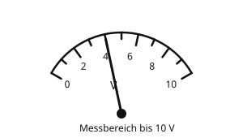

Die Spannung messen
Mit einem KI-Tutor lernen
Ein KI-Tutor erklärt dir diese Seite und hilft dir bei den Übungen. Wähl deinen Assistenten:
Mit Claude öffnen Mit ChatGPT öffnen Mit Mistral Vibe öffnen
Du nutzt dein eigenes Konto beim Anbieter. Der Assistent ist kein Angebot von lernapps.net: lernapps liefert nur Inhalte und Übungen. Die Wahl gilt für alle Seiten, nur auf diesem Gerät.
Der Gegenpart zum Amperemeter
Das Amperemeter misst die Stromstärke, indem es in den Weg des Stroms eingebaut wird. Für die Spannung gibt es ein eigenes Gerät, das Voltmeter. Es wird anders angeschlossen.
Danach kannst du die Spannung mit einem Voltmeter richtig messen.
Das Voltmeter liegt neben dem Bauteil
Die Spannung gibt an, wie stark der Strom zwischen zwei Punkten angetrieben wird. Darum hält man die beiden Anschlüsse des Voltmeters an die beiden Enden des Bauteils, dessen Spannung man wissen will. Man sagt: Das Voltmeter wird parallel zum Bauteil geschaltet. Der Stromkreis bleibt dabei ganz, du musst ihn nicht auftrennen. Im Schaltplan ist das Voltmeter ein Kreis mit einem V.

Die Lampe und das Voltmeter hängen an denselben zwei Punkten.
Quelle: eigene Zeichnung. Lizenz: CC-BY-4.0.- Voltmeter
Ein Voltmeter ist ein Messgerät für die Spannung. Man schaltet es parallel zu dem Bauteil, dessen Spannung man messen will.
Nicht in den Weg des Stroms einbauen
Baust du das Voltmeter wie ein Amperemeter in den Weg des Stroms ein, liegt es als Hindernis im Kreis. Dann fließt kaum noch Strom, und die Lampe bleibt dunkel. Das Voltmeter gehört neben das Bauteil.
Ablesen: Du liest die Skala wie beim Amperemeter. Zähle die kurzen Striche zwischen zwei Zahlen und überlege, wofür ein kurzer Strich steht. In der Zeichnung gehen die Zahlen von 0 bis 10 V in Schritten von 2 V, dazwischen liegt je ein kurzer Strich für 1 V.

Das Voltmeter zeigt hier 4 V (Beispiel zum Ablesen).
Quelle: eigene Zeichnung. Lizenz: CC-BY-4.0.Beispiel: Die Spannung an der Lampe messen
So gehst du vor
- Der Stromkreis aus Batterie und Lampe ist geschlossen und die Lampe leuchtet.
- Du schaltest das Voltmeter parallel zur Lampe: ein Anschluss an das eine Ende der Lampe, der andere an das andere Ende. Den Kreis lässt du dabei ganz.
- Du liest den Wert ab, zum Beispiel 4 V.
- Die Lampe liegt also an einer Spannung von 4 V.
Übung
Übung
Lösung
Anschluss A
Hier liegt das Voltmeter im Weg des Stroms. Es misst dort nicht die Spannung an der Lampe, und die Lampe bleibt dunkel.
Anschluss B richtige Antwort
Das Voltmeter liegt parallel zur Lampe, an denselben zwei Punkten. So misst es die Spannung an der Lampe.
Ein Voltmeter wird parallel zu dem Bauteil geschaltet, dessen Spannung man messen will.
Mehr dazu:
Übung
Lösung
Richtige Antwort: 7 V (erlaubte Abweichung: 0,3 V)
Der Zeiger steht auf dem kurzen Strich zwischen 6 und 8. Der kurze Strich steht für 1 V mehr als 6 V, also 7 V.
Mehr dazu:
Übung
Lösung
Richtige Antwort: Die Aussage stimmt nicht.
Das Voltmeter wird parallel zum Bauteil angeschlossen. Der Kreis bleibt ganz.
Mehr dazu:
Übung
Lösung
Richtige Antwort: Die Aussage stimmt.
Die Batterie hat auch ohne Stromkreis Spannung. Das Voltmeter muss nur an ihre beiden Anschlüsse.
Mehr dazu: